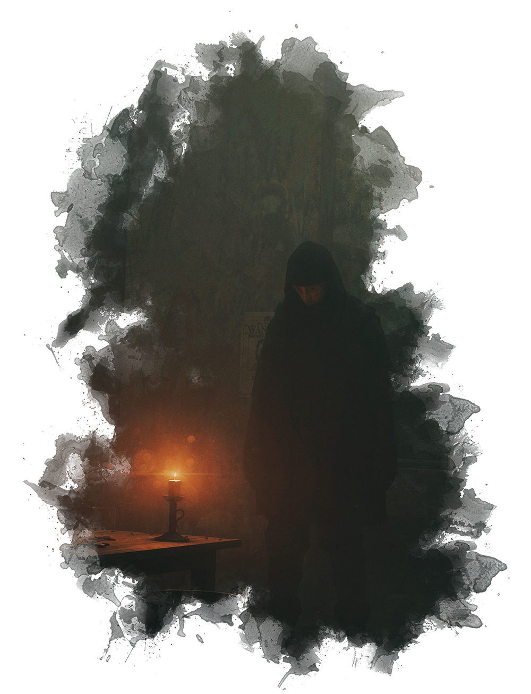
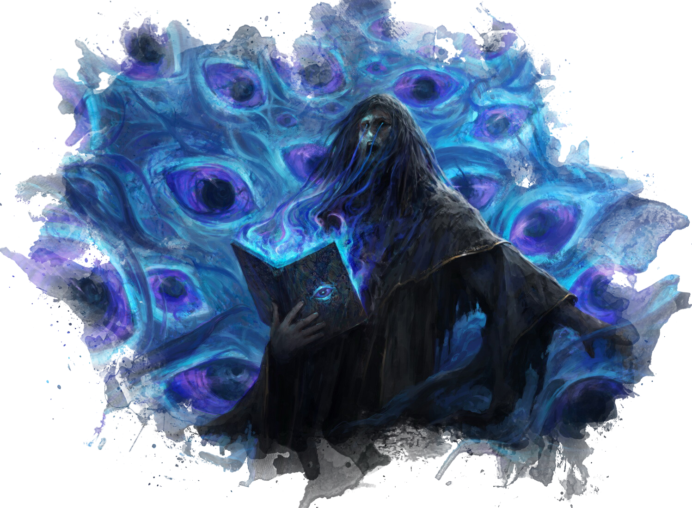

THE DARK BETWEEN
The Dark Between is a sort of "Steampunk", sort of
"Gaslamp" fantasy setting that takes place on the planet of
Naos. The heart of The Dark Between lies in
the exploration of themes of gray morality authority versus
autonomy, chaos and order, and the concept that the more we
know about the Universe, the more we don't.
This setting has everything from unknowable elemental beings, powerful spellcasters, to genius inventors. Naos is a vast world, with many varying cultures and points of view—the technological wonders of Aljieudum, the stretching verdant hills of Savaar, and the militaristic might of Tharsis.
This setting has everything from unknowable elemental beings, powerful spellcasters, to genius inventors. Naos is a vast world, with many varying cultures and points of view—the technological wonders of Aljieudum, the stretching verdant hills of Savaar, and the militaristic might of Tharsis.
MAGIC IN NAOS
Luminous Magic

On Naos, Magic that is cast through The Luminary is called Luminous Magic. While The Thread gives all living creatures on Naos a connection to The Luminary, creating magic using The Thread is not so simple or easily done. Manifesting magical effects with Luminous Magic involves interfacing directly with the Luminary using the Thread and providing the celestial entity with a Conviction.
Acronists
Since wielding Luminous Magic is so difficult, it often (but not always) requires years of dedication and training to create anything meaningful with it. Those individuals that take the time to hone their Magic into something powerful are called Acronists.Convictions
A Conviction is a statement of belief provided to The Luminary, something that is not true of the world but that the Acronist firmly believes in their mind and soul is true. When Luminous Magic is cast on Naos, the wielder must form a Conviction strong enough to convince The Luminary that whatever they want to happen is reality, thus manifesting their belief into the physical world. If a Conviction is strong enough, it can become a Fixed Truth.Fixed Truths
A Fixed Truth is a Conviction created by Luminous Magic so powerful that rather than manifesting a temporary change to reality, the Conviction becomes a part of reality permanately. Even when the Acronist stops the Conviction, whatever the result reamins as the new truth of reality.The Faded
They are quite depressing, aren't they? I had a Great
Uncle that was a Fade. Strangest thing—there wasn't a
hint of color in his eyes. Other than that you would
never have known. He didn't do much, just sat around
skulking most of the time. Though perhaps he was just a
boring person, even before his thread was severed.
—Mekhag Ardashessian, Memoirs
of the Luminancer
 Fades—or, The Faded—whether willingly or forcibly, have had their Thread to Magic was severed, rendering them unable to use Magic or be touched by it in any way.
In some cases, Fades tend to feel less emotion than other humans. Without conscious effort, they find themselves drawn towards quiet places and distance themselves from others. On the whole, however, Fades retain much of their original personality from before they where changed. Although their soul, their spiritual connection to the source of Magic has been severed, their human qualities remain.
Some Fades strive to overcome their lack of Magic by becoming experts in their field. Skilled blacksmiths, mathematicians, historians, warriors, engineers, and more. Their drive to make the most out of what they have and overcome their shortcomings gives them extraordinary determination.
The Lightless
Foul, despicable creatures. To commit such a willing sin
to unmake your soul and bind it to such a odious being
is reprehensible. Worse, even than being untethered
entirely. To be shackled to the corrupt Soul is to
commit the highest of infedelities to the Luminary. It
is a mockery of the Faith.
—Kanada Badakar, Exalted
Vencus of the Argent
 Lightless are humans who have chosen to forgo their tether to the Luminary and instead bind themselves to the corrupt Primal Spirit of Soul. They go by many other names—Karaatmar, Darklings, Demons.
Long ago, the Primal Spirit of Soul became twisted and defiled, and malformed into a new being. This new Corrupt Soul, still tethered to The Luminary, grew into a new symbol within the Argentia, an emblem of wickedness and all that is unholy within humanity. To many, the Lightless are a living blasphemy against the Luminary. Unlike the The Faded, who are simply untethered completely—and generally not by choice—the Lightless are untethered from the Luminary and bound to the corrupt soul instead. This pact gives the Lightless inhuman abilities—heightened senses, the ability to read emotions, a longer lifespan, and access to Magics that would otherwise be unreachable to mere humans.
The Primal Spirits
Origins
In the beginnings of the world, when humans huddled around fires and struggled to survive, they often looked to beings beyond dieties with power outside of normal comprehension, either to worship or fear or to simply explain how the world around them worked.In a sense, early humans saw these divine concepts as Universal Movers, beings that encompassed various aspects of their lives. In their belief and worship, humanity as a whole catalyzed a collective Conviction so strong that it these beings were willed into existence. Overtime, primordial beings were formed from the faith that existed within humanity. The Convictions that created these beings was so strong that it became a Fixed Truth in reality, allowing the spirits to continue to exist even as humanity evolved.

Sentience
It is unknown to the denizens of Naos whether the Primal Spirits are sentient, or simply forces of nature. In truth, the answer is more complex than that. The Primal Spirits themselves are far more complex constructs, both incomprehensible forces and, for lack of a better term, minds. They work as parts of a whole, and there are many instances of physical manifestations of the Primal Spirits coming into existence in the physical world, either pulled by a mortal that lives in it, or simply bubbled into existence by random chance. These manifestations can take many forms, both benign and dangerous. Many have been worshiped and feared as minor gods or monsters in their own right.In some ways, the Primal Spirits have a “will” of their own, trying to shape the world in their image however they see fit. But they are also vastly incomprehensible, and often their influence on the world is met with fear and awe.
Intrinsic Values
Since the Primal Spirits were created by and for Humans, each of the spirits is also intrisically tied to certain values. These values influence how the Primal Spirits manifest in the world and their influence on it.The Primal Earth is tied to the values of Balance, Strength, and Neutrality.
The Primal Air is tied to the values of Freedom, Self, and Honesty.
The Primal Water is tied to the values of Change, Adaption, and Fear.
The Primal Fire is tied to the values of Passion, Life, and Fury.
The Primal Bone is tied to the values of Substance, Pain, and Death.
The Primal Soul, prior to corruption, was tied to the values of Thought, Morality, and Virtue.
In the present, the Primal Soul is tied to the values of Corruption, Manipulation, and Ego.